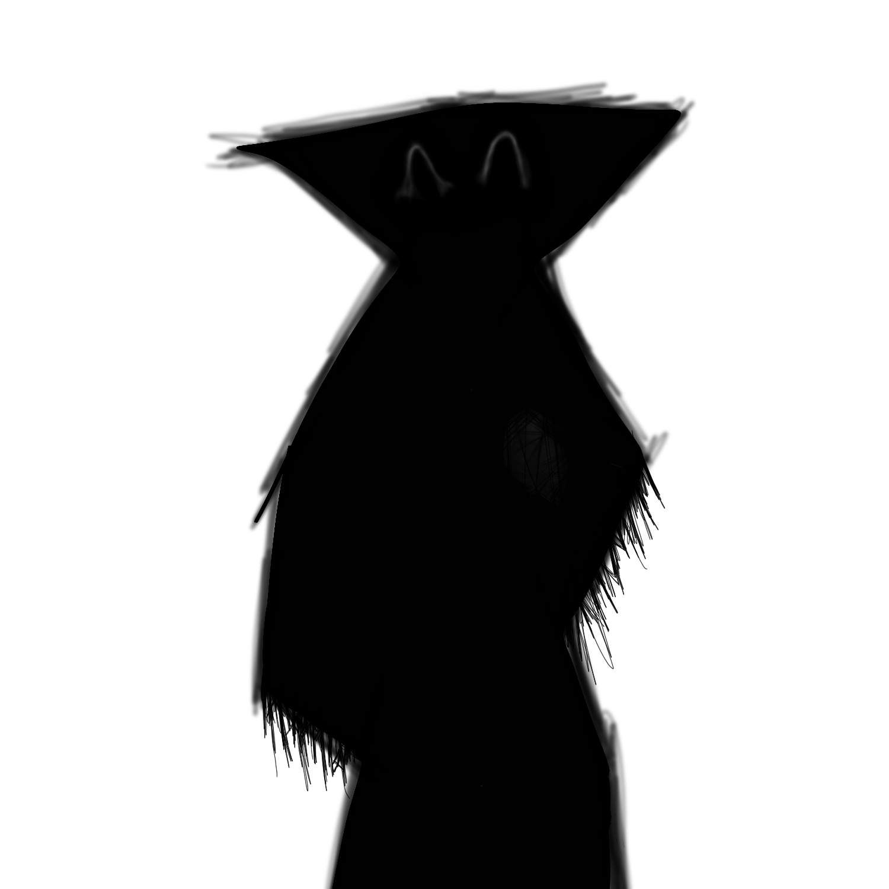
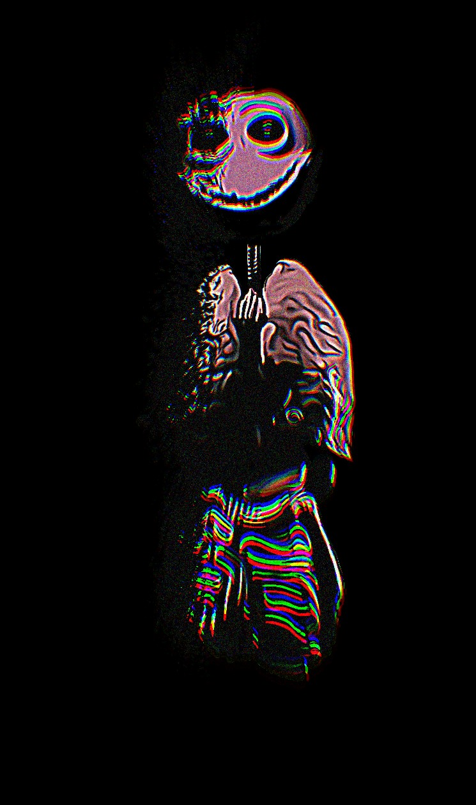
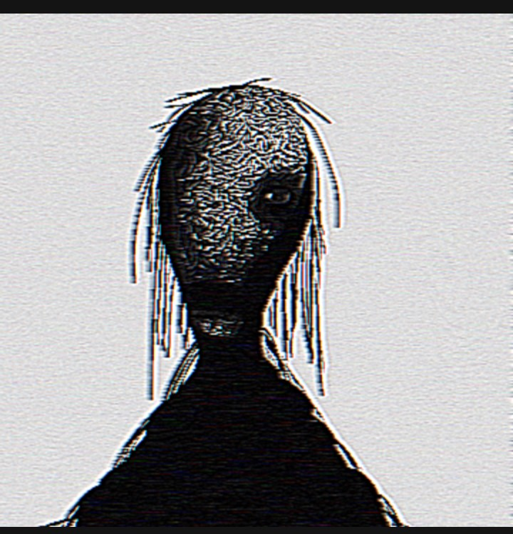

Henry / PastValley
visual artist & analog horror creator
Introduction
This is a personal portfolio and archive of my work. Here you can find a selection of visual projects, experimental ideas and ongoing creations.
Most of the content here focuses on atmosphere, discomfort and subtle visual distortion. I am especially interested in creating entities and images that feel slightly unnatural or out of place.
Focus
– analog horror
– visual design and entities
– storytelling and writing
– voice acting
About me
My name is Henry, also known as PastValley online.
I create visual and experimental projects, including analog horror, illustrations, voice acting and written stories.
My work is mainly focused on creating atmosphere and discomfort, often exploring ideas that feel slightly wrong or unfamiliar.
I am still developing my style and exploring different ways to combine visuals, sound and storytelling into more complete projects.
Projects
Most of my current work consists of ongoing experiments and concepts that are still in development.
Some of these projects may evolve into larger works in the future.
visual experiments
short tests focused on atmosphere and image composition
entity concepts
design and exploration of original unsettling figures
Gallery

"the/, the Personification of Insanity".

"LetMeIn, a remnant of the past".
.png)
"The Thing in The Forest, the god you always prayed for".

"Angeline, an old friend".
Contact
Email: pastvalley.contact@gmail.com
Feel free to reach out for collaborations, projects or general questions.